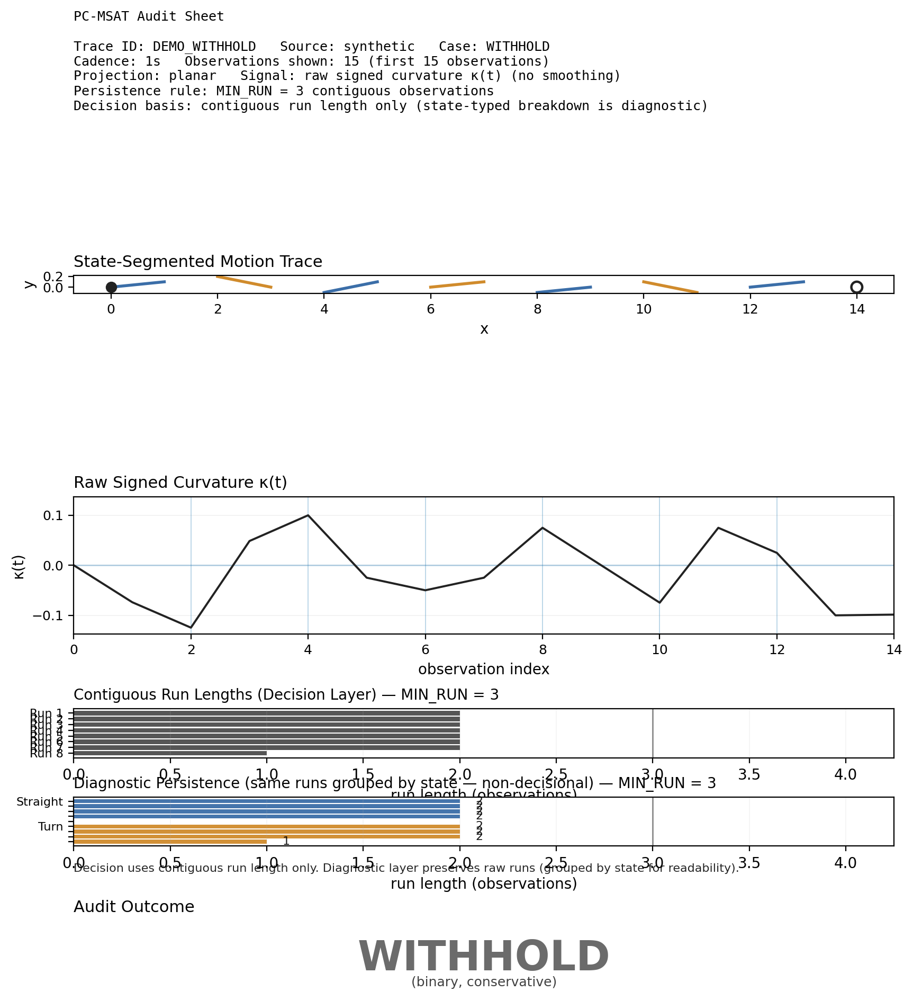
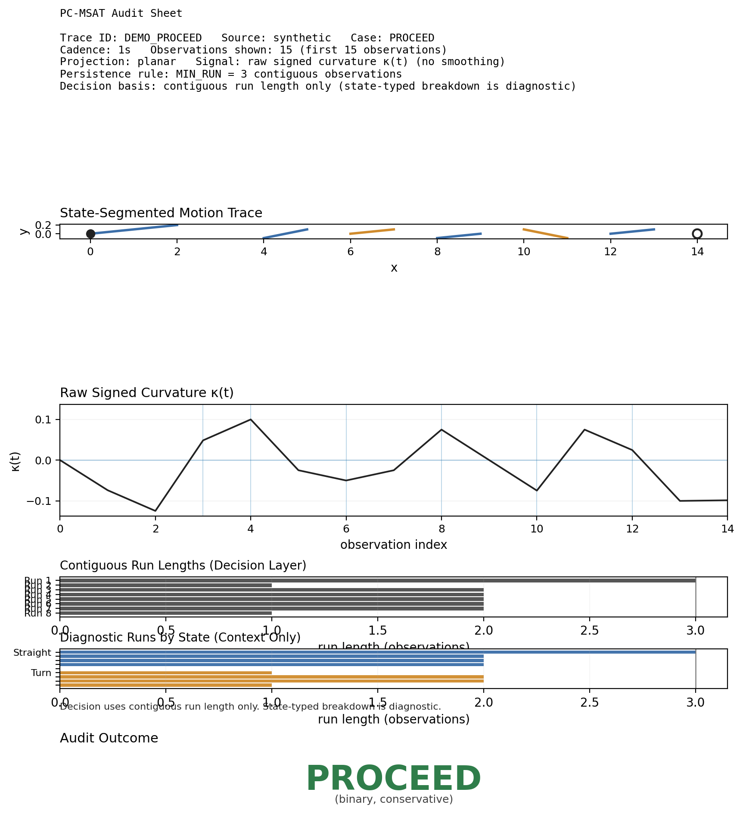

PC-MSAT is a protocol for auditing motion traces before analysis. It evaluates whether a motion trace exhibits sufficient geometric persistence to justify downstream interpretation.
Rather than performing classification, the protocol produces a simple audit outcome:


Full specification, renderer, and example artifacts:
github.com/cperryresearch/pc-msat-audit-interface
Part of the Structured Orb Dynamics research ecosystem.